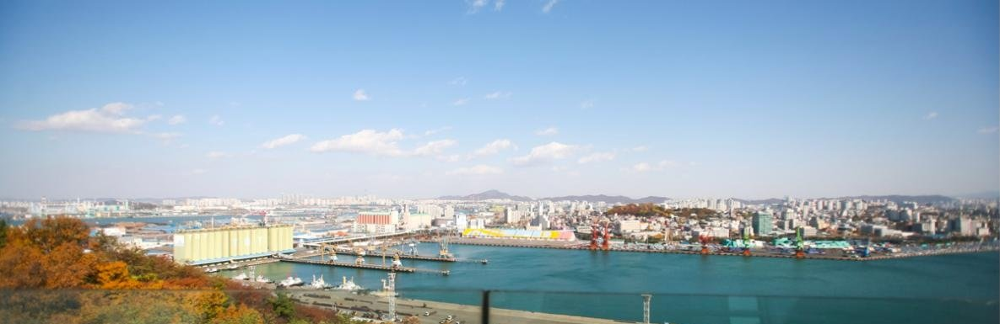

[한중수교 34년·끝] 흑자는 돌아왔고 통제는 남았다, 34년의 결산
2026년 1월 대중 무역수지가 흑자로 돌아섰다, 3년 적자의 끝이다
그러나 그 흑자의 절반은 반도체 하나이고, 희토류 통제는 그대로다
사람은 돌아오기 시작했고 문화는 아직 멈춰 있다
1992년 8월 24일 한국과 중국이 외교관계를 맺었다. 34년이 지났다. 이 연재는 열한 편에 걸쳐 2026년 10월 기준으로 한중관계를 끊어 보았다. 마지막은 결산이다. 무엇이 돌아왔고 무엇이 남았는지 숫자로 정리한다.

※ 이 연재는 2024년 인천투데이에 실린 「한중수교 32년」 연재를 잇는다. 논지는 이어받되 수치와 사실은 2026년 10월 기준으로 다시 확인해 썼다.
1. 돌아온 것 하나, 흑자
가. 3년 적자가 끝났다
대중 무역수지는 2023년 181억달러, 2024년 69억달러, 2025년 112억달러 적자였다. 2026년 1월 흑자로 돌아섰다. 5월 한 달 37억9000만달러, 1월부터 5월 25일까지 누적 93억5800만달러 흑자다.
4년 만의 반전이다. 그러나 반전의 내용을 보면 기뻐할 일만은 아니다.
나. 절반이 반도체 하나다
2026년 6월 수출은 1021억6600만달러였다. 반도체가 448억2000만달러, 전체의 43.8%다. 지역별로는 중국 19.6%, 미국 19.6%, 아세안 17.9%다.
중국 수출의 큰 몫이 반도체다. 반도체 경기가 꺾이면 흑자도 같이 꺾인다. 2023년 적자가 바로 그 구조에서 나왔다. 구조는 바뀌지 않았고 가격이 바뀌었다.
2. 남은 것 하나, 통제
가. 희토류 수입량 76% 감소
중국의 희토류 수출통제는 2025년 4월 중희토류 7종 허가제로 시작했다. 2025년 10월 12종으로 늘고 역외통제가 붙었다. 2026년 1월 6일에는 일본에 대한 수출금지로 갔다.
한국의 희토류 수입량은 76% 급락했다. 허가제는 금지가 아니다. 그러나 허가를 받는 데 걸리는 시간과 서류가 사실상의 수량 조절이 된다.
나. 핫라인은 열렸으나
2026년 1월 5일 정상회담 뒤 3월 18일 한중 상무·산업장관회의에서 공급망 핫라인을 가동하기로 했다. 회의는 열렸고 핫라인은 생겼다.
생긴 것과 작동하는 것은 다르다. 희토류 수입량이 76% 줄어든 수치가 2026년의 답이다.
3. 비대칭은 그대로다
상품 교역은 2700억달러인데 서비스는 388억달러다. 전체의 14.2%다. 한국의 교역 상대 평균이 23.8%다. 중국과의 교역에서 서비스 비중이 유별나게 낮다.
한중 자유무역협정 2단계 협상은 2026년에만 다섯 차례 열렸다. 제17차 협상이 2026년 10월 12일부터 16일까지 서울에서 있었다. 2015년 1단계 발효 뒤 서비스·투자 후속 협상이 11년째다.
횟수는 성실의 지표가 아니다. 타결 시점은 2026년 10월 기준으로 확인하지 못했다.
4. 산업에서는 들어오는 쪽이 커졌다
가. 전기차 3대 중 1대
한국에서 새로 등록한 전기차 가운데 중국산 비중은 2022년 4.7%였다. 2025년 33.9%다. 한국산은 75%에서 57.2%로 내려왔다.
상용 전기차에서 먼저 무너졌고 승용으로 올라오고 있다. 가격이 아니라 배터리와 소프트웨어에서 밀린다는 것이 이 숫자의 뜻이다.
나. 중국 안의 한국 기업은 줄어든다
중국에 진출한 한국 기업 32%가 5년 안에 철수하거나 옮기거나 줄이겠다고 답했다. 들어오는 중국 제품은 늘고 나가 있는 한국 공장은 줄어든다. 두 방향이 같은 해에 함께 나타났다.
5. 사람은 돌아오기 시작했다
가. 무비자 10만명, 이탈 21명
2025년 9월 29일부터 2026년 6월 21일까지 무비자로 들어온 중국인이 10만4369명이다. 무단이탈은 21명, 0.02%다. 제도는 2026년 12월 31일까지 연장됐다.
시행 전에 나온 우려는 숫자로 반박됐다.
나. 카페리는 아직 40%다
한중 카페리 여객은 41만명이다. 2019년의 40% 수준이다. 항공은 돌아왔는데 배는 돌아오지 않았다. 인천항에 걸린 문제다.
6. 문화는 멈춰 있다
한한령은 10년이 됐다. 업계가 해제의 기준으로 보는 것은 1만석 규모 단독 콘서트다. 2026년 10월 기준으로 그 기준을 넘은 사례는 확인하지 못했다.
경제는 숫자로 복원됐고 문화는 복원되지 않았다. 이 격차가 한중관계의 성격을 보여 준다. 필요한 것은 사고 팔지만 좋아하는 것은 허락하지 않는다.
7. 바다와 갯벌
2026년 7월 25일 부산에서 열린 제48차 세계유산위원회에서 한국의 갯벌 2단계 등재가 확정됐다. 15만6386헥타르, 1단계보다 22% 넓다. 같은 회의에서 부산선언이 나왔다.
황해는 한국과 중국이 함께 쓰는 바다다. 갯벌 보전에서는 협력의 틀이 생겼다. 서해 구조물과 불법조업에서는 아직 '건설적 협의' 단계다. 같은 바다에서 두 속도가 돌아간다.
8. 인천의 자리
전국 외국인투자기업의 53%가 인천경제자유구역에 있다. 한중 카페리 항로가 인천항에 모여 있다. 무비자 중국인이 들어오는 입구가 인천공항이다. 서해 5도가 서해 구조물 문제의 현장이다.
한중관계의 변수 대부분이 인천을 통과한다. 그런데 인천이 그 변수를 다루는 정책 주체로 서 있는지는 별개의 문제다. 외투기업 53%는 유치의 성과이고, 그 기업들이 지역 고용과 연구개발로 이어졌는지는 다시 따져야 한다.
9. 34년을 한 문장으로
흑자는 돌아왔고 통제는 남았다. 사람은 돌아오기 시작했고 문화는 멈춰 있다. 상품은 커졌고 서비스는 작다. 들어오는 제품은 늘고 나가 있는 공장은 줄어든다.
수교 34년의 한중관계는 복원된 관계가 아니라 재편된 관계다. 1992년의 상호보완은 끝났고, 2026년의 관계는 경합과 의존이 같은 품목 안에 겹쳐 있다. 반도체가 그렇고 배터리가 그렇고 희토류가 그렇다.
이 구조에서 한국이 쓸 수 있는 수단은 두 가지다. 하나는 품목을 늘리는 것, 즉 반도체 하나에 걸린 흑자를 여러 갈래로 바꾸는 일이다. 다른 하나는 서비스 교역의 14.2%를 올리는 것이다. 둘 다 협상 횟수로 되는 일이 아니다.
연재를 마친다.
참고문헌
관세청 수출입무역통계, 2026년 1~6월 대중국 교역 실적
산업통상자원부, 2026년 6월 수출입 동향
산업통상자원부, 한중 자유무역협정 서비스·투자 후속협상 제17차 협상 보도자료, 2026년 10월
대통령실, 한중 정상회담 결과 보도자료, 2026년 1월 5일
법무부, 중국 단체관광객 무비자 입국 제도 시행 실적
유네스코 세계유산위원회 제48차 회의 결정문, 2026년 7월, 부산